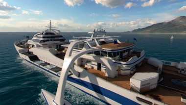

Nuketown is one of the OG map every COD players know. It is a classic COD map that appeared for the first time in the series in Call of Duty: Black Ops (2010).
Hijacked is a map that is a yacht. Hijacked is a classic map that appeared for the first time in the series in Call of Duty: Black Ops II (2012).
